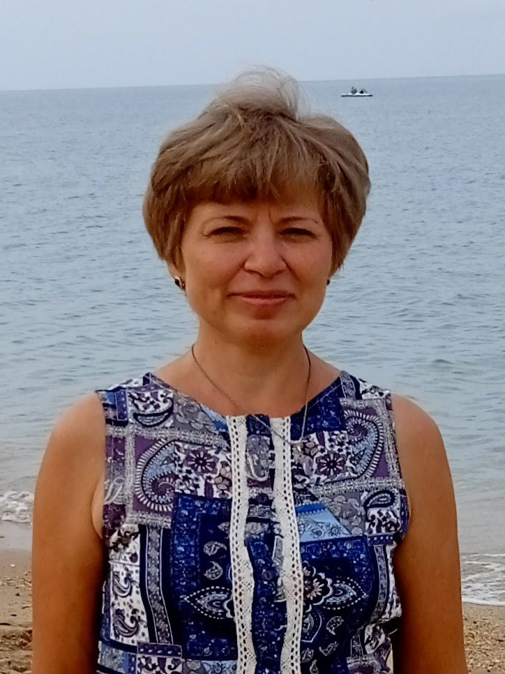
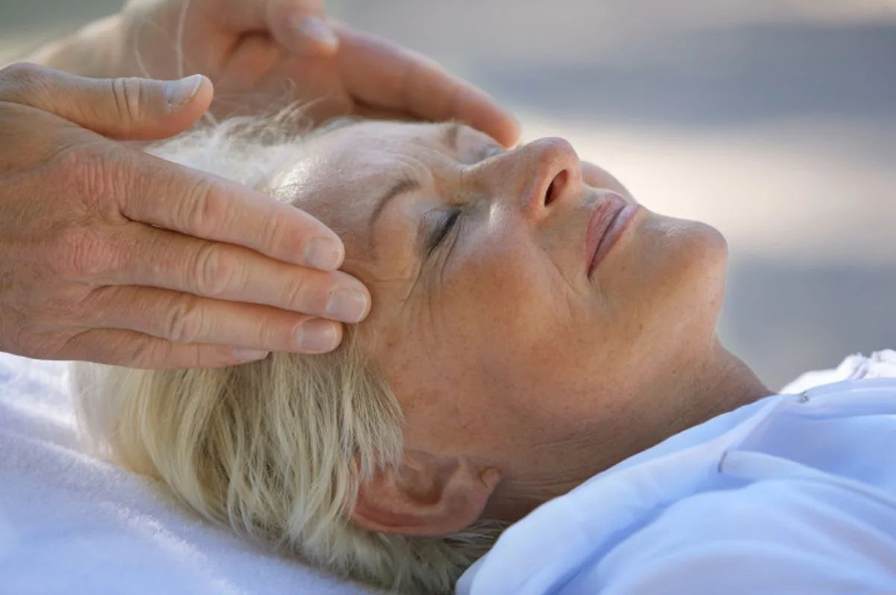

Мой целостный подход к человеку, как к многомерной структуре (Тело – Душа – Дух) позволяет разрешить вопросы на уровне тела, личности и Души.
Записаться на консультацию
🌿 Биодинамика — мягкая техника восстановления естественных ритмов организма. Активируются внутренние процессы оздоровления, возвращается энергия и лёгкость.
Консультация и курсовое сопровождение.
Инструменты: нейрографика, МАК-карты, энергопрактики.
Здоровье, родология, детская нумерология, отношения, прогностика.
Диагностика и энергокоррекция. Метод, гармонизирующий тело и психику.
→ листайте вправо ←
→ листайте вправо ←